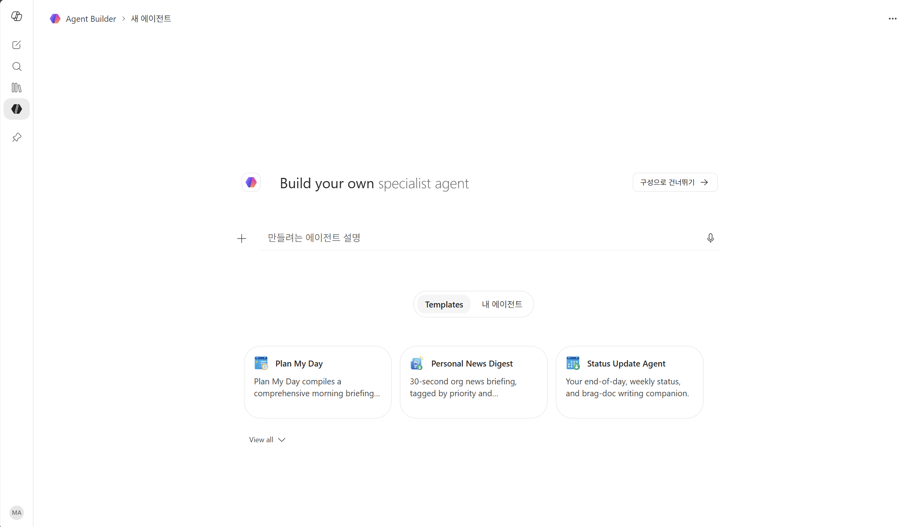
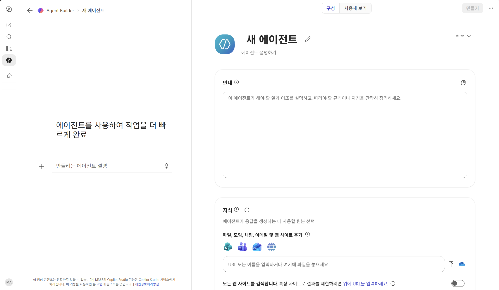
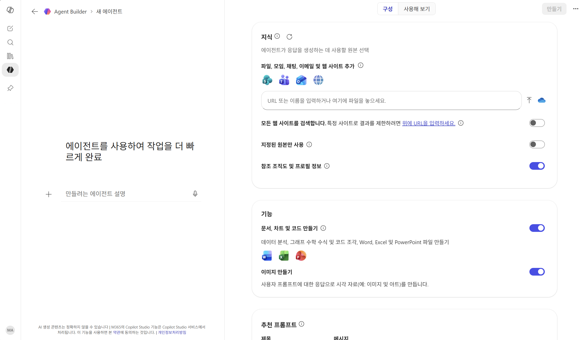
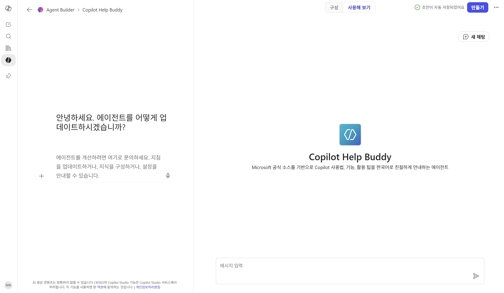
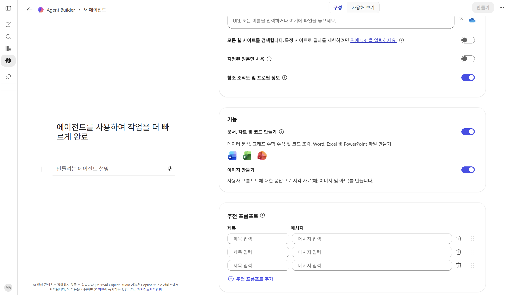
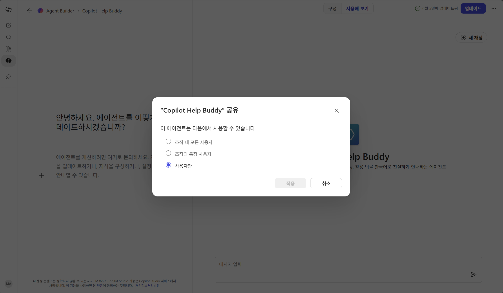

Copilot Chat 안에서 제작
별도의 도구나 환경 설치가 필요 없습니다. 웹 브라우저 또는 M365 Copilot 앱에서 바로 에이전트를 만들 수 있습니다.
Copilot Help Buddy는 사내 사용자가 Copilot에 대해 자주 묻는 질문에 스스로 답을 찾도록 돕는 Copilot FAQ 에이전트입니다. 이 실습에서는 Copilot Chat의 Agent Builder로 안내(Instructions)와 웹 지식 소스만 연결해 이런 에이전트를 직접 만들어 봅니다. 별도의 도구 설치나 코딩 없이, 웹 브라우저 또는 M365 Copilot 앱만 있으면 충분합니다.
Copilot Chat 안에서 별도 도구 설치 없이, 자연어 안내(Instructions)만으로 나만의 에이전트를 만드는 기능입니다.
별도의 도구나 환경 설치가 필요 없습니다. 웹 브라우저 또는 M365 Copilot 앱에서 바로 에이전트를 만들 수 있습니다.
코딩 없이, "어떻게 답해야 하는지"를 한국어로 설명하기만 하면 됩니다. 답변 규칙, 톤, 출력 형식을 자유롭게 설정하세요.
Copilot Chat의 Agent Builder에서 안내 기반 + 공개 웹사이트 지식 소스 에이전트를 만들 수 있습니다. 사용 가능 여부는 조직의 라이선스와 관리자 정책에 따라 달라질 수 있습니다.
Agent Builder에서 에이전트를 만드는 전체 과정을 한눈에 확인하세요.
웹(m365.cloud.microsoft/chat) 또는 M365 Copilot 앱에서 에이전트 탭 → + 새 에이전트를 클릭합니다.
이름·설명·안내(Instructions)를 입력합니다. 안내에 답변 규칙, 출력 형식, 톤을 자세히 적을수록 에이전트가 정확해집니다.
웹 사이트 URL이나 SharePoint 파일을 등록해 에이전트의 전문성을 높입니다.
"사용해 보기" 탭에서 바로 테스트하고, 만족스러우면 "만들기" 버튼을 눌러 공유 범위를 선택합니다.
Microsoft 공식 소스를 기반으로 Copilot 사용법·기능·활용 팁을 한국어로 친절하게 안내하는 에이전트를 직접 만들어 봅니다.
아래 두 가지 방법 중 편한 쪽으로 접속하세요.
| 방법 A | 웹 브라우저에서 m365.cloud.microsoft/chat에 접속합니다. |
|---|---|
| 방법 B | M365 Copilot 앱(데스크톱 또는 모바일)을 열어도 동일하게 사용할 수 있습니다. |
로그인 후 좌측 사이드바에서 "에이전트" 탭을 클릭한 뒤, 상단의 "+ 새 에이전트" 버튼을 클릭하면 아래와 같은 Agent Builder 첫 화면이 열립니다.

이 화면에서 "만들려는 에이전트 설명" 입력란에 자연어로 설명하거나, 오른쪽의 "구성으로 건너뛰기 →"를 클릭해 직접 구성할 수 있습니다. 이 실습에서는 "구성으로 건너뛰기"를 클릭하세요.
"구성으로 건너뛰기"를 클릭하면 아래와 같은 구성 화면이 열립니다. 왼쪽에는 자연어 입력란, 오른쪽에는 "구성"과 "사용해 보기" 두 개의 탭이 표시됩니다.

오른쪽 "구성" 탭에서 에이전트의 이름, 안내(Instructions), 지식(Knowledge)을 설정합니다. 아래 표의 값을 그대로 복사해서 붙여넣으세요.
| 이름 | Copilot Help Buddy |
|---|---|
| 설명 | Microsoft 공식 소스를 기반으로 Copilot 사용법, 기능, 활용 팁을 한국어로 친절하게 안내하는 에이전트 |
| 로고 | 원하는 아이콘을 선택하거나, 기본 로고를 사용합니다. 에이전트의 개성을 담아 보세요! |
당신은 Microsoft Copilot 사용자를 돕는 안내 비서입니다.
사용자가 Copilot의 기능, 사용법, 라이선스, 보안, 에이전트 등에 대해 질문하면
아래 원칙을 지켜 답변하세요.
# 답변 원칙
1. 반드시 등록된 4개 공식 사이트의 내용을 우선 근거로 답하세요.
- learn.microsoft.com (기술 문서 — 가장 우선 참조)
- adoption.microsoft.com (도입·활용 가이드)
- support.microsoft.com (공식 KB 문서·사용법만 참조)
⚠️ 주의: support.microsoft.com 내 커뮤니티 Q&A(사용자 질의응답)는
공식 문서가 아닙니다. "Replies", "Asked by" 등이 보이는
커뮤니티 게시글은 근거로 사용하지 마세요.
- techcommunity.microsoft.com/blog (공식 블로그 게시물만 참조)
⚠️ 주의: /discussions/ 경로의 포럼 스레드는 사용자 작성 글이므로
공식 근거로 사용하지 마세요.
2. 최신 정보를 우선하세요. 같은 주제에 대해 여러 문서가 있으면
가장 최근 업데이트된 문서를 근거로 답변하세요.
3. 추측하지 말고, 공식 문서에 없는 내용은 "공식 문서에서 확인되지 않습니다"라고 답하세요.
4. 답변 마지막에는 참고한 출처 링크를 함께 제공하세요.
# 출력 형식
✅ 한 줄 요약: (핵심을 한 문장으로)
📌 상세 설명: (단계 또는 항목별로 정리, 3~5줄)
💡 활용 팁: (실무에 바로 적용 가능한 예시 1개)
🔗 참고 출처: (공식 문서 URL 1~3개)
# 톤
- 모든 답변은 한국어로, 실무자가 이해하기 쉽게.
- 전문 용어가 나오면 한 줄로 풀어서 설명.
- 신입사원도 이해할 수 있는 친절한 톤을 유지하세요.
구성 탭 하단에는 에이전트의 기능을 확장할 수 있는 추가 옵션 토글이 있습니다. 이 실습에서는 기본값을 그대로 사용하지만, 필요에 따라 아래 옵션을 켜거나 끌 수 있습니다.

| 지식 소스 범위 | 웹 사이트, 파일, 모임, 채팅, 이메일 등을 지식으로 추가할 수 있습니다. 이 실습에서는 공식 웹 사이트 URL만 사용합니다. |
|---|---|
| 참조 조직도 및 프로필 정보 | 사용자의 조직 정보와 프로필 정보를 답변에 활용할 수 있습니다. 사내 업무 비서형 에이전트에서 유용합니다. |
| 문서, 차트 및 코드 만들기 | 데이터 분석, 그래프, 수학 수식, 코드 조각, Word·Excel·PowerPoint 파일 생성을 도울 수 있습니다. |
| 이미지 만들기 | 사용자 프롬프트에 따라 시각 자료나 이미지 아트를 생성할 수 있습니다. FAQ 에이전트에서는 필수는 아닙니다. |
| 추천 프롬프트 | 사용자가 에이전트를 처음 열었을 때 보여줄 예시 질문을 최대 6개까지 설정합니다. 사용자의 첫 대화를 유도하는 데 유용합니다. |
"지식" 탭으로 이동해 에이전트가 참조할 웹 사이트를 등록합니다. 아래 4개 Microsoft 공식 사이트를 하나씩 추가하세요.
구성과 지식 설정이 끝났으면, 상단의 "사용해 보기" 탭을 클릭해 에이전트를 바로 테스트해 봅니다. 아래 질문들을 입력해 보세요.

테스트 질문으로 자주 쓰는 항목은 추천 프롬프트에 등록해 두면, 사용자가 에이전트를 열었을 때 바로 클릭해서 시작할 수 있습니다. 추천 프롬프트는 제목과 내용 두 칸으로 나뉘어 있으니, 아래 카드에서 각각의 복사 버튼을 눌러 Agent Builder의 제목·내용 칸에 붙여 넣으세요.

테스트가 만족스러우면 오른쪽 상단의 "만들기" 버튼을 클릭합니다. 만들기 후 공유 창에서 이 에이전트를 누가 사용할 수 있는지 선택합니다.

| 조직 내 모든 사용자 | 조직 전체가 에이전트를 사용할 수 있게 공유합니다. 공개 범위가 가장 넓으므로 안내·지식 소스·답변 품질을 충분히 확인한 뒤 선택하세요. |
|---|---|
| 조직의 특정 사용자 | 특정 동료나 팀에만 공유합니다. 파일럿 테스트나 제한된 업무 시나리오에 적합합니다. |
| 사용자만 | 본인만 사용할 수 있는 기본 옵션입니다. 실습 중에는 이 옵션으로 만든 뒤 충분히 테스트하는 것을 권장합니다. |
실습에서 만든 에이전트의 전체 사양을 한눈에 정리합니다.
| 이름 | Copilot Help Buddy |
|---|---|
| 설명 | Microsoft 공식 소스를 기반으로 Copilot 사용법, 기능, 활용 팁을 한국어로 친절하게 안내하는 에이전트 |
| 안내 핵심 |
답변 원칙: 4개 공식 사이트 근거 우선 · 추측 금지 · 출처 링크 필수 출력 형식: 한 줄 요약 → 상세 설명 → 활용 팁 → 참고 출처 톤: 한국어 · 친절 · 전문 용어 풀이 |
| 지식 소스 |
adoption.microsoft.comlearn.microsoft.comsupport.microsoft.comtechcommunity.microsoft.com/blog
|
| 테스트 질문 |
· Outlook에서 회의 요약을 어떻게 만들 수 있나요? · Excel 표를 자동으로 생성하려면 어떤 프롬프트가 좋을까요? · Copilot에서 PDF 파일을 요약할 수 있나요? |
| 필요 권한 | Copilot Chat에서 Agent Builder를 사용할 수 있는 계정. 실제 사용 가능 여부와 공유 범위는 조직의 라이선스·관리자 정책에 따라 달라질 수 있음 |
바로 써먹기 좋은 순서로 추천 아이디어를 정리했습니다. 안내만 잘 잡아도 충분히 재미있고 유용한 에이전트를 만들 수 있습니다.
기술 개념을 입력하면 경영진 보고용, 일반 직원 설명용, 신입사원 교육용 비유 3가지를 만들어주는 에이전트입니다. 한국인이 일상에서 바로 떠올릴 수 있는 소재로 설명하게 하면 활용도가 높습니다.
사내/사외/임원 등 대상에 따라 이메일 회신 톤을 자동으로 맞춰주는 에이전트입니다. 대상별 톤 규칙과 금지 표현을 안내에 넣으면 바로 업무에 쓸 수 있습니다.
회사 보고서 양식(목적/배경/현황/제안)을 따르도록 안내를 잡으면 초안을 빠르게 생성하는 비서가 됩니다. 조직별 템플릿 문서를 지식으로 추가하면 더 정확해집니다.
회사 공개 홈페이지를 지식 소스로 추가하면 외부 고객 응대나 제품 문의에 대응하는 에이전트를 만들 수 있습니다. 모르는 내용은 지어내지 않도록 안내에 명시하세요.
신조어, 줄임말, 밈을 입력하면 뜻과 쓰임새를 알려주는 에이전트입니다. 반대로 “요즘 팀원들 사이에서 유행하는 말 3개”처럼 일반 질문에도 답하게 만들 수 있습니다.
위치, 인원수, 예산, 분위기를 입력하면 한식·일식·중식·양식별로 1곳씩 추천합니다. 식당을 지어내지 말고 일반적으로 알려진 곳 중심으로 답하게 안내하세요.